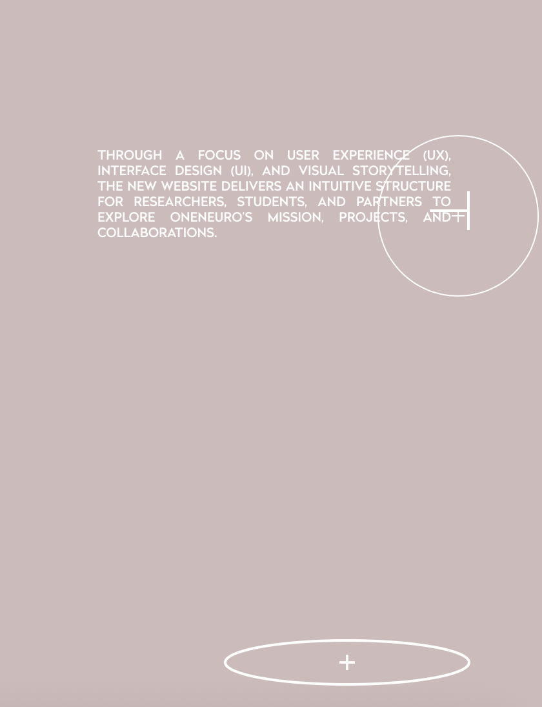

12
Most Frustrating Aspect
What is the most frustrating part of the interaction and what makes that part frustrating?
The most frustrating aspect is the limited use of explicit signifiers and navigation cues, which can make it difficult to immediately understand how to move between sections. While minimal design supports aesthetic clarity, it reduces usability for first-time users, requiring extra effort to interpret interactive elements. This creates tension between visual simplicity and functional clarity.